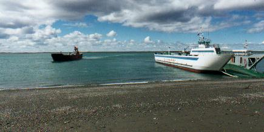
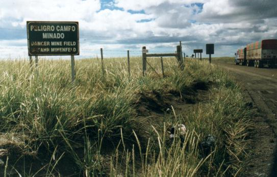
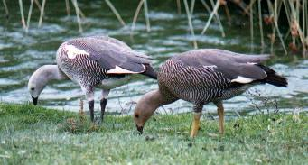
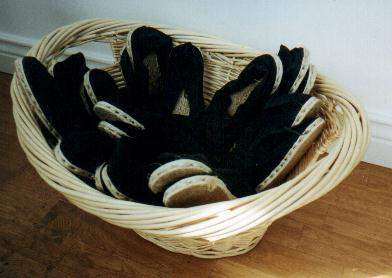
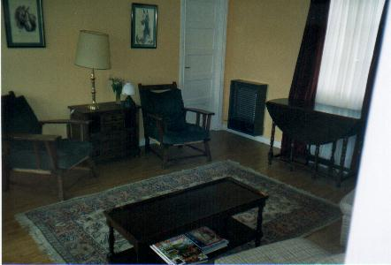
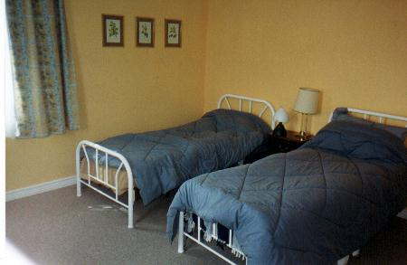

Día 4: Desde Comandante Luis Piedrabuena hasta Estancia Cabo San Pablo (763 km.) Hoy llegaríamos a nuestro primer destino fijo, en la Isla Grande
de Tierra del Fuego. Como ya era costumbre en este viaje, el camino iba siempre al sur. Nos dirigíamos hacia la frontera chilena, única alternativa para tomar el transbordador a la isla. Pasamos diversos paisajes atractivos de llanuras y cerros. A los costados del camino observamos varios individuos de una especie de ave sureña: la Monjita Chocolate. Llegamos a la frontera de Monte Aymond. Hicimos los trámites y continuamos, ahora por camino asfaltado. Nuestra premura era llegar al ferry en buena hora, por que teníamos información que hoy se suspendía el servicio por dos horas a partir de las 14:00. Si perdíamos el cruce de las 11:30 seguramente llegaríamos a la isla no antes de las 17 hs., y no tendríamos tiempo de llegar a destino. Del lado chileno el camino es excelente, de cemento muy bien nivelado, y con banquinas de lujo. En un corto sector solamente una mano está pavimentada, así que los conductores se turnan – o se desafían – bajando un par de ruedas al ripio en el último momento posible. De repente divisamos azul a la distancia: era el mar, o mejor dicho, el Estrecho de Magallanes. Nos sorprendió, por que en nuestra experiencia de viajar al sur, cuando se sigue la ruta en esta dirección sólo se ve más ruta. Pero ahora habíamos llegado a un extremo: ¡aquí terminaba el continente americano! Comparando el mapa con el paisaje pudimos confirmar la forma de la costa, casi como si fuese una vista aérea. En este sitio está el principal estrechamiento, la Primera Angostura. ¿Y del otro lado? ¡La Isla Grande de Tierra del Fuego! Llegamos bien al “puerto”. Nuestros temores de encontrar kilómetros de autos haciendo cola para cruzar se desvanecieron infundadamente. Hasta tuve tiempo de juntar algunos caracoles en el Estrecho de Magallanes. ¡Qué lujo!  La playa que da al Estrecho de Magallanaes. A la izquierda arriba el ferry que tomamos. A la distancia se ve la Isla Grande de Tierra del Fuego Finalmente abordamos el ferry con el auto, cargamos camperas y largavistas, cerramos el auto, y subimos a la parte superior de la nave. Avanzamos hacia la proa, por que queríamos ser los primeros en ver la fauna que prometía este cruce. Y algo vimos: algunos pingüinos nadando y una hermosa Tonina Overa negra y blanca, o mejor dicho, gris oscuro y crema. A la distancia vimos varias aves, pero la más interesante, sin duda, fue un grupo que volaba en fila india. El primero bajaba hacia las olas, luego mostraba su flanco, luego subía y giraba. De nuevo bajaba hacia las olas. Este baile lo repetía infinitamente en perfecta secuencia. Y también lo habían aprendido los que seguían tras el primero, puesto que cada ave seguía a su antecesor repitiendo la misma rutina. Parecían delfines, pero volaban. No conocíamos este comportamiento ni reconocíamos estas aves, y algo nos decía que eran especies de mar afuera, es decir, pelágicas. Anotamos mentalmente los colores: blancos y negros en distintas partes del cuerpo. Tras una rápida mirada a la Guía de Aves, determinamos la especie: eran Pardela Cabeza Negra (Pufinus gravis), ave marina como ninguna. La distante costa opuesta se acercaba, y tras solo 25 minutos de navegación, los tripulantes ordenaron que debíamos ocupar ya los vehículos. El ferry tocó costa, se abrieron las compuertas, y los autos comenzaron a bajar a tierra. Bajé a pié para sacar una foto del momento crucial en que mi mujer bajaba el auto a la isla, retornando así, finalmente, a su isla natal. Debíamos ahora realizar casi 200 km. de ripio, pero antes había que sacar una foto del cartel que daba cuenta del peligroso campo minado que bordeaba la costa – al menos eso decía, y no estaba con ganas de entrar a comprobarlo. Sea cierto o no, me sorprendió mucho. Era lo que menos me esperaba aquí. Nunca antes había visto un campo minado, y recordé todas las campañas internacionales que buscan poner fin a esta práctica que inutiliza un sector del mundo para siempre.  ¡Ojo con las minas! El viento soplaba, pero delante nuestro se abría el inigualable paisaje fueguino, con sus hermosas praderas húmedas, bien verdes. Los abundantes cauquenes nos obligaban a detener unos instantes para inspeccionarlos a través de los largavistas, a fin de comprobar si había Cauquén Colorado, aquella “especie rara”, tan parecida al “común”, y que, si estaba, no debíamos dejar de ver. Pero todos parecían ser los “comunes”.  Pareja de cauquenes comunes. La foto fue tomada en Isla Pavón, Enero 1998 El macho (de cabeza blanca) y la hembra (habano) Nos llevó varias horas hacer este tramo por un camino en estado algo deteriorado, y que no parecía terminar nunca. Finalmente arribamos a la frontera, cerca de San Sebastián. Ahora a repetir los trámites en forma inversa, para volver a ingresar a la Argentina. Se alargó la espera a causa de un ómnibus lleno de turistas, quienes, uno a uno, debían cumplir con las formalidades. Pasamos un rato en la costa de San Sebastián, lugar famoso para las aves migradoras, que llegan todos los años, en cantidades de cientos de miles, desde Alaska. El mar estaba bajo, y lo blanco que divisábamos a la lejanía serían las grandes bandadas de varias especies de migradoras asentadas en la playa. Pero bastó con utilizar los binoculares para sentir una gran desilusión: lo blanco era la espuma de las olas que rompían. No vimos una sola ave en esa playa, y se desvanecieron las ilusiones de ver diversas especies nuevas, que eran “fijas” para este lugar. Y tampoco pudimos observar el espectáculo maravilloso de las enormes bandadas en vuelo, digno del mejor documental de la TV. Estas aves, diversos tipos de chorlos y playeros, vuelan en enjambres, obedeciendo a un mandato superior que los hace girar repentinamente de un lado a otro en perfecto unísono. Al girar y cambiar su actitud de vuelo, presentan perfiles a veces claros, a veces oscuros, y esta dinámica produce un efecto óptico que les da un aspecto plateado. Otra vez será… A pesar de los interesantes caracoles que junté, incluyendo una especie poco frecuente (una almeja que sería Mulinia epidermia), no alcanzó a consolarnos. No fue la única desilusión: el auto no había resistido del todo el tramo de ripio, y el temor de que se trataba de una falla seria silenció a los ocupantes. Debíamos revisar al llegar a Río Grande. Avanzamos por excelente pavimento hacia el sudeste, bordeando el mar por la característica diagonal atlántica de la isla. Pasamos la famosa Misión Salesiana, y entramos a Río Grande, y nos dirigimos de inmediato a la agencia Renault. Mi mujer descendió, yo pase al lugar del copiloto, y un mecánico nos llevó a “dar una vuelta”. ¡Que vuelta! Probó el auto circulando por la transitada costanera, acelerando hasta 140 km/hora en tramos donde yo no hubiera sabido alcanzar los 60. Atrás, los chicos estaban en trance, y algo pálidos. A la vuelta el mecánico dictaminó la causa del problema: un semieje gastado. Se había desplazado el fuelle de goma que cubría la unión del semieje - esto habría ocurrido tal vez semanas atrás - y el ripio encontró aquí su oportunidad de hacer daño, reemplazando el lubricante por partículas de arena y roca – nada mejor para moler una fina pieza metálica de alta calidad. El semieje derecho había cobrado demasiado juego y pronto debería ser cambiado. Pero no había repuesto, ni aquí ni en Ushuaia, así que se repuso el fuelle y seguiríamos utilizando la pieza en el estado actual, con precaución. No se vería afectado nuestro plan. El repuesto original (para el lado derecho...) fue encargado – debería ser enviado desde Córdoba, vía Buenos Aires. Sería despachado a Ushuaia, donde haríamos el cambio dentro de pocos días. Pasamos por la famosa tienda “La Anónima” donde compramos comida para los 4 días que estaríamos en la estancia, y retomamos la Ruta 3. Cruzamos el río Grande y continuamos hacia el sur. La preocupación causada por el problema mecánico no nos permitió disfrutar del paisaje atractivo. Pasamos la Estancia Viamonte, la Punta María y ascendimos hacia los bosques. Ya era tarde, casi las 10 de la noche, pero aún había buena luz. En la isla las rutas secundarias se indican con letras, y nosotros doblamos ahora por la Ruta “a”. Solo restaban los últimos 40 km. para llegar a la estancia, por buen camino de ripio, que se internaba por densos y mágicos bosques. Pasamos varias estancias, y ansiosos esperábamos el cartel que indicaba nuestro destino: la Estancia Cabo San Pablo perteneciente a la familia Apolinaire, donde pasaríamos 4 noches. Una buena hora nos llevó, y alcanzamos el lugar cuando ya era de noche. Al no conocer el lugar dudábamos donde debíamos anunciarnos, pero pronto estábamos conversando con los dueños, quienes nos indicaron a nuestra “casita”. De noche no pude distinguir como era el casco, pero vi la elegante casa principal, de chapa como todas las demás, y perfectamente pintada de amarillo. Había una fila de otras casas, y una de ellas era la que ocuparíamos nosotros. Eramos los únicos huéspedes. La dueña, Rachel, nos invitó a pasar. El primer trámite era quitarnos los zapatos y, opcionalmente, colocarnos alpargatas secas y de todos los tamaños que poblaban un gran canasto ubicado en el hall de entrada. - “Una costumbre muy patagónica.” Explicó Rachel. Es que era una necesidad imprescindible. Era imposible salir afuera sin empapar el calzado, por que toda la zona tiene turberas, pantanos y arroyos. Y más aún si llueve, como había ocurrido hace poco: el agua emana copiosamente de barrancos, veredas y zanjas. Todo era barro, todo estaba mojado. Hasta los pastos altos, cubiertos de gotitas, empapan todo desde las rodillas hacia abajo.  ¡El canasto con Alpargatas para todo tamaño de pié! La casita tenía un ambiente central comodísimamente equipado,
con señoriales mesitas y cuatro cómodos sillones. El interior
de la casa estaba recién pintado, y todo lucía reluciente.
Rachel nos mostró las habitaciones: alfombradas, con hermosos cortinados
que hacían juego con los cálidos colores de las paredes.
Las camas tenían acolchados divinos que daban ganas de tirarse a
dormir ahí mismo. El baño era un lujo aparte, con gruesas
toallas, y delicados jaboncitos (acertadamente con forma de caracoles marinos).
En la cocina había todo lo que necesitábamos, incluso algo
de comida: pan, leche, café y deliciosos dulces caseros: todo para
el desayuno.   El interior de la casita: Living central (izquierda) y uno de lo cuartos (derecha) Desempacamos el auto, evitando los charcos y barreales. Rachel había comentado que había llovido durante los últimos 40 días casi sin excepción, lo cual no había ocurrido en años. Hacía frío, y ya era medianoche, pero aún a esta hora se escuchaba reiteradamente el sórdido ruido de las Becasinas que, lanzándose velozmente en picada, emiten un ruido rasposo al pasar el aire por ciertas plumas especialmente formadas, haciéndolas vibrar. ¿Qué hacían a esa hora? Tal vez la inmensa luna lo sabía… Nos fuimos a dormir a medianoche, satisfechos de haber llegado con nuestros hijos a esta esquina del mundo, insólita y distante. Pero cansados después de un día extenuante que había durado más de 20 horas. |